Portfólio Profissional · 2026
Arquiteta & Urbanista · Porto Velho, Rondônia
"Não é só sobre espaço. É sobre como a vida acontece dentro dele."
Scroll
Perfil
Me chamo Gesislene Moura — Geise — arquiteta e urbanista formada pela FIMCA com média 8,67 e TCC nota 10. Antes da planta, existe uma conversa. É dessa escuta que cada projeto nasce: da vida, da rotina e da essência de quem vai habitar o espaço.
Atuo com foco em interiores residenciais e comerciais para pessoas em fase de mudança consciente, que entendem que o ambiente onde vivem influencia quem elas são e como se sentem.
Não parto apenas da estética. Parto da vida do meu cliente — e o projeto nasce como consequência de uma escuta sensível, técnica e intencional. A família é central, o silêncio é luxo e a casa precisa favorecer paz, acolhimento e bem-estar.
10+
Anos de experiência
8,67
Média na graduação
6+
Softwares dominados
5
Segmentos atuados
Experiência
Jan 2014 – Dez 2015
Marcenaria · Ouro Preto do Oeste, RO
Primeiro contato com projetos 3D via Promob Plus. A experiência com marcenaria desenvolveu um olhar apurado para materialidade, encaixe e escala humana — base sólida para toda a carreira.
Set 2015 – Mai 2018
Da Vinci Projetos · Ouro Preto do Oeste, RO
Primeira experiência formal em arquitetura. Desenvolvimento completo de projetos de interiores — da concepção à entrega final — em AutoCAD e SketchUp. Acompanhamento de obras com registro fotográfico e levantamentos in loco. Atendimento direto a clientes, desenvolvendo escuta ativa e capacidade de traduzir desejos em soluções técnicas.
Mai 2018 – Dez 2019
Centerlux Iluminação · Porto Velho, RO
Especialização em iluminação técnica e decorativa — um dos elementos mais determinantes para a atmosfera de qualquer projeto de interiores. Leitura e interpretação de projetos luminotécnicos, atendimento a arquitetos, designers e clientes finais. Representante na Expobella 2019 (SP) e palestrante na FIMCA em parceria com a Centerlux.
Jun 2020 – Jun 2022
Portobello Shop · Porto Velho, RO
Consultoria e especificação técnica de revestimentos, metais, louças sanitárias e acabamentos. Elaboração de projetos de mobiliário em porcelanato — cubas, nichos, bancadas e painéis de TV. Paginação de pisos e revestimentos compatibilizando projeto arquitetônico com especificações técnicas. Atendimento consultivo a arquitetos e designers com domínio completo do portfólio Portobello.
2023 – 2024
Gabí Santos | Arquitetura & Interiores · Cacoal, RO · Remoto
Foco em detalhamento técnico e projeto executivo residencial. Elaboração de cadernos técnicos completos no Revit — mobiliário, marcenaria e paginação. Participação em curso interno de Revit para Interiores ministrado pela Arq. Gabi Santos, aprofundando modelagem 3D e documentação técnica executiva.
Dez 2023 – Dez 2025
Portobello Shop · Porto Velho, RO
Retorno ao ecossistema Portobello com maior senioridade. Soluções completas e personalizadas para arquitetos, engenheiros e clientes finais — unindo conhecimento técnico, visão projetual e relacionamento humanizado no processo de especificação.
Mai 2026 – Presente
Gabí Machado | Arquitetura & Interiores · Remoto
Desenvolvimento de projetos de interiores residenciais com modelagem 3D, renderização, detalhamento executivo, cadernos técnicos de marcenaria e paginação de revestimentos. Responsável pela elaboração completa da documentação técnica para projetos executivos, com foco em precisão, organização de pranchas e qualidade de entrega.
2026 – Presente
Projetos próprios · Porto Velho, RO · Presencial e remoto
Parcerias com arquitetos, engenheiros e clientes diretos. Atendimento residencial e comercial com entrega completa — do conceito ao executivo.
Portfólio
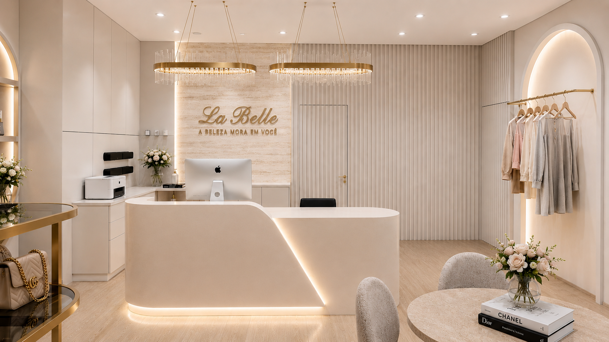
4 imagensComercial · Interiores · 2026
La Belle
Projeto executivo · Revit
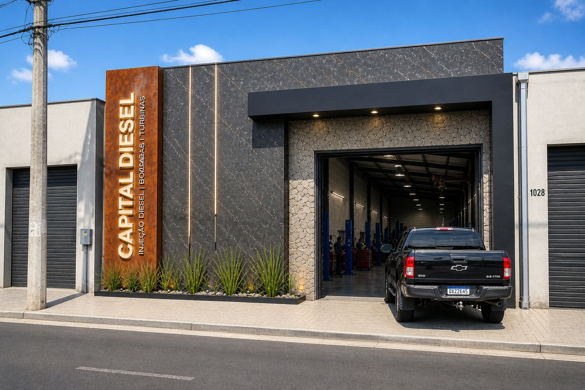
2 imagensFachada Comercial · 2026
Capital Diesel
Projeto arquitetônico
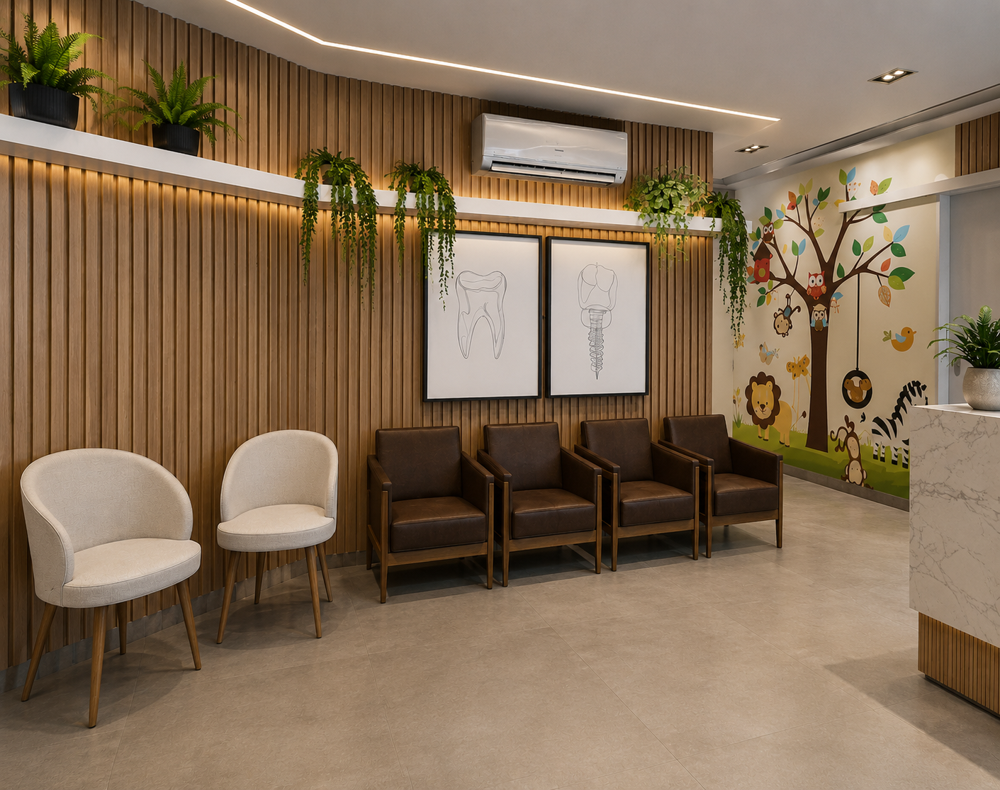
2 imagensComercial · Interiores
Recepção
Projeto de interiores · SketchUp
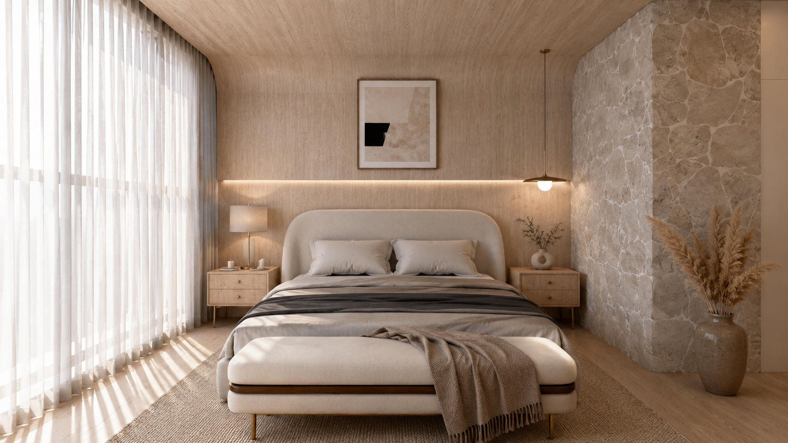
2 imagensCasa Veraneio · Residencial · 2026
Suíte Master
Projeto de interiores · Revit
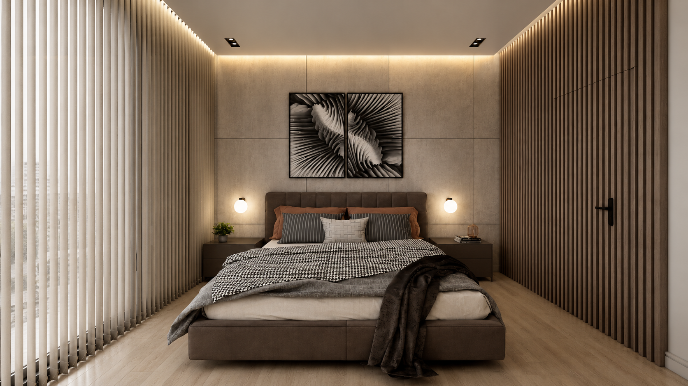
2 imagensCasa Veraneio · Residencial · 2026
Suíte dos Filhos I
Projeto de interiores · Revit
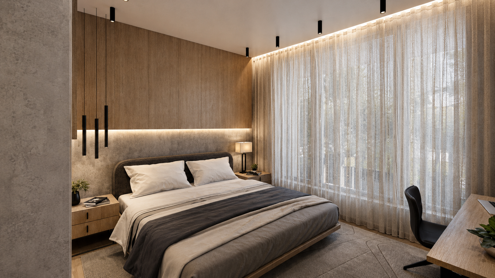
2 imagensCasa Veraneio · Residencial · 2026
Suíte dos Filhos II
Projeto de interiores · Revit
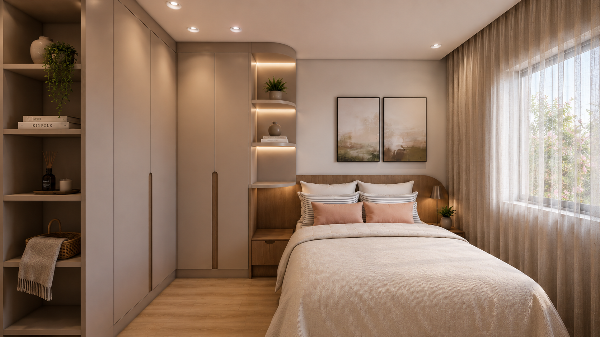
2 imagensCasa Veraneio · Residencial · 2026
Suíte de Hóspedes I
Projeto de interiores · Revit
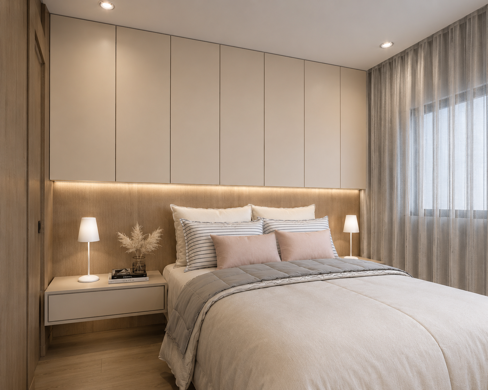
2 imagensCasa Veraneio · Residencial · 2026
Suíte de Hóspedes II
Projeto de interiores · Revit
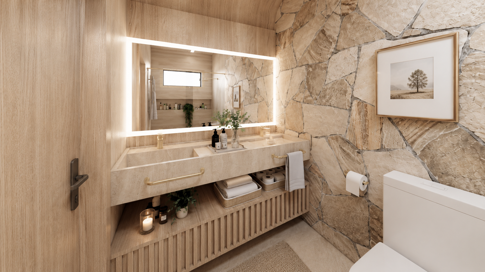
Casa Veraneio · Residencial · 2026
Banheiro Suíte Master
Projeto de interiores · Revit
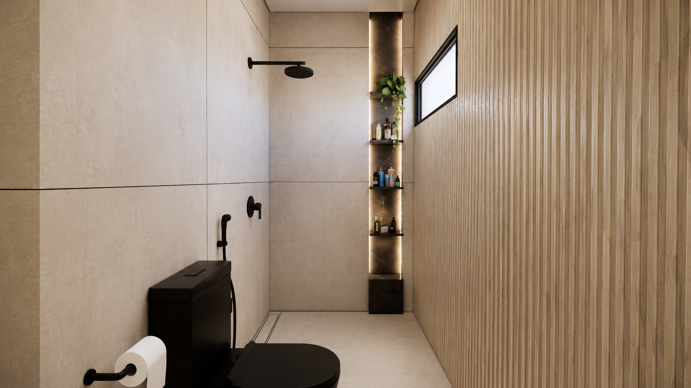
Casa Veraneio · Residencial · 2026
Banheiro dos Filhos
Projeto de interiores · Revit
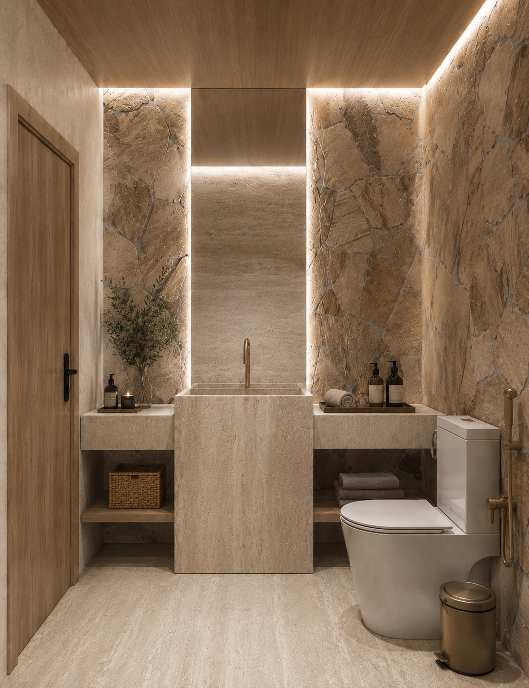
Casa Veraneio · Residencial · 2026
Lavabo I
Projeto de interiores · Revit
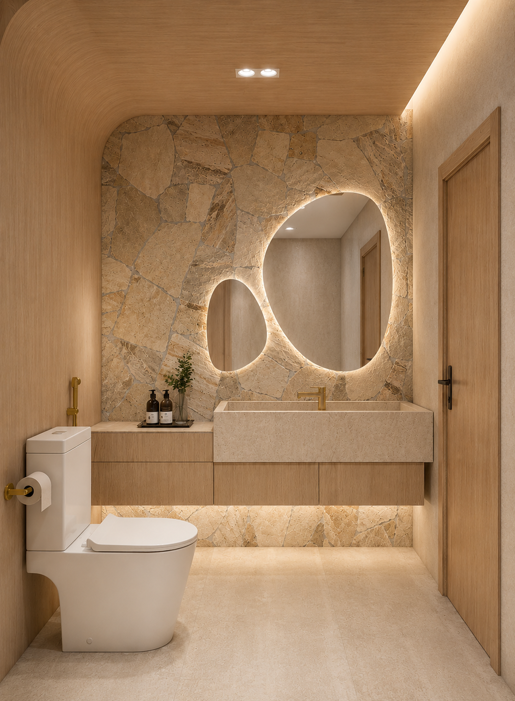
Casa Veraneio · Residencial · 2026
Lavabo II
Projeto de interiores · Revit
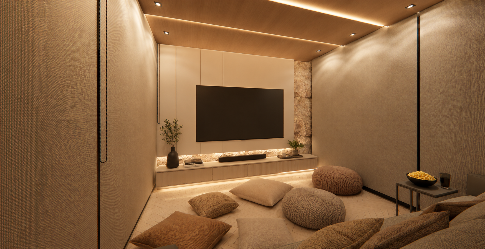
Residencial · Interiores
Sala de TV · Cinema
Projeto de interiores · Revit
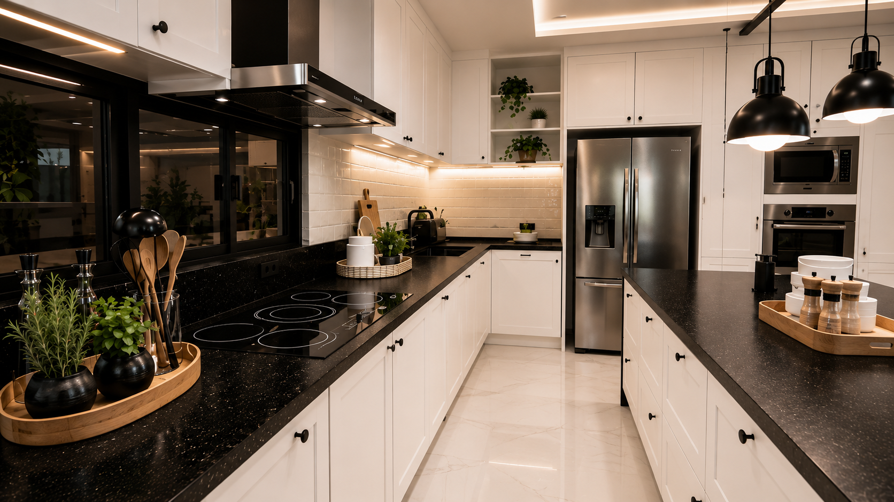
3 imagensResidencial · Interiores
Cozinha Americana
Projeto de interiores · Revit
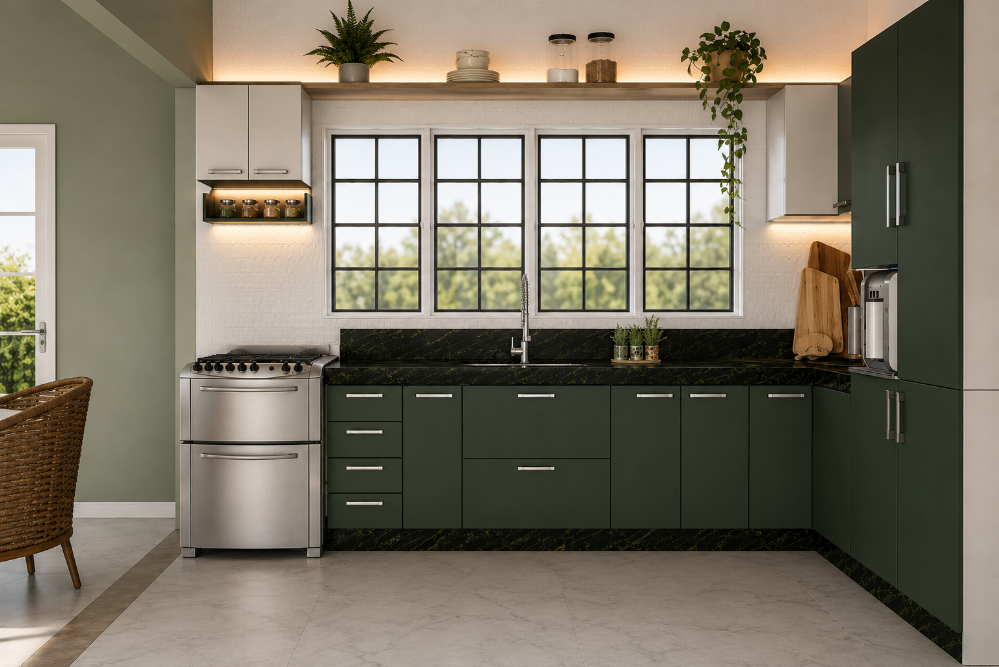
2 imagensResidencial · Interiores
Cozinha Pedra Verde
Projeto de interiores
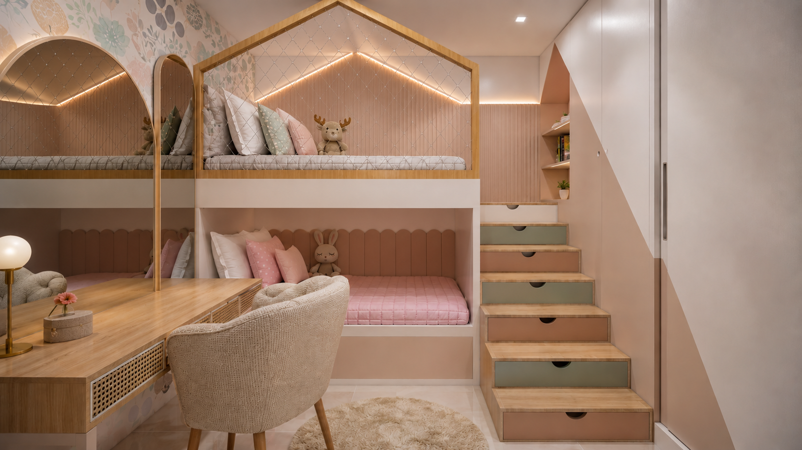
2 imagensResidencial · Interiores
Dormitório Infantil
Projeto de interiores · Revit
Por que me escolher
Da marcenaria à iluminação, do revestimento ao projeto executivo — entendo cada camada do espaço construído de forma integrada.
Neuroarquitetura e Biofilia como método: projetos que impactam bem-estar, comportamento e qualidade de vida.
Escuta ativa, atendimento direto e capacidade de traduzir desejos em documentação técnica clara e executável.
Do conceito ao canteiro: 3D, renderização fotorrealista, caderno técnico executivo e acompanhamento de obra.
Formação
Centro Universitário Aparício Carvalho — FIMCA
Bacharelado em Arquitetura e Urbanismo
Fev 2019 – Dez 2023 · Porto Velho, RO
Formação de 3.860h reconhecida pelo MEC. TCC nota 10, com destaque em projetos executivos, interiores e urbanismo — unindo técnica, estética e funcionalidade.
8,67
Média final
Conceito A
Vamos conversar
Seu ambiente pode acolher melhor sua rotina, sua identidade e a vida que você deseja construir.
Atendimento presencial em Porto Velho, RO, e online para todo o Brasil.